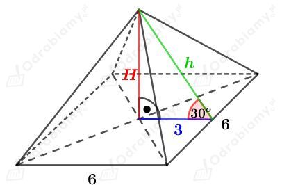
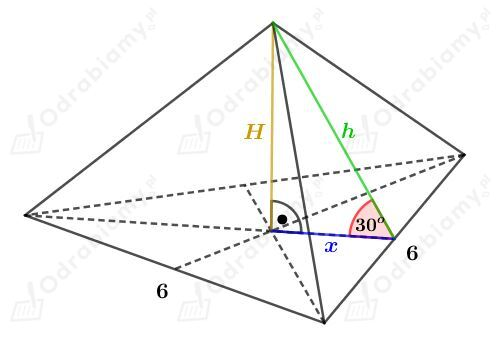
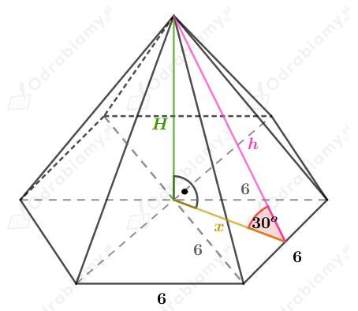
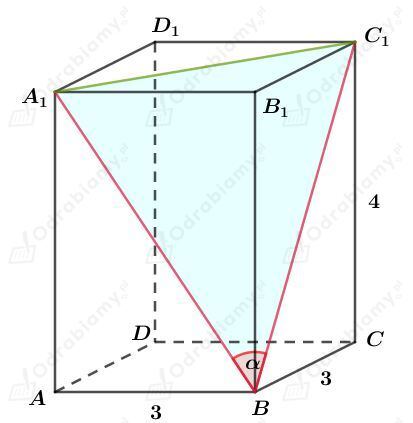
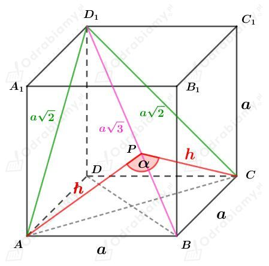
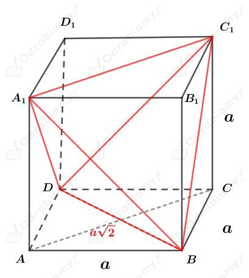
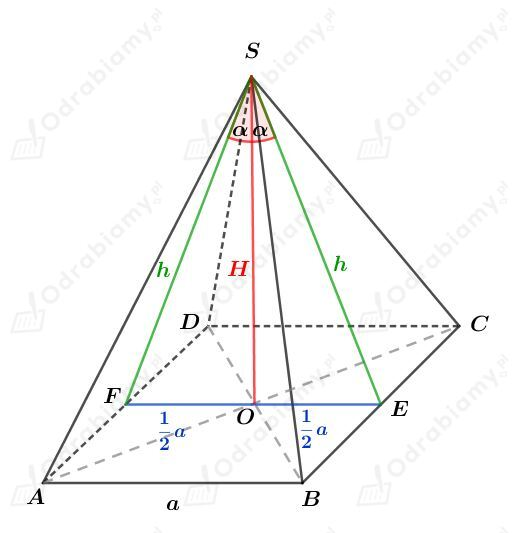
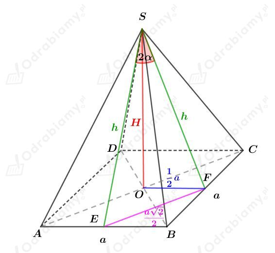
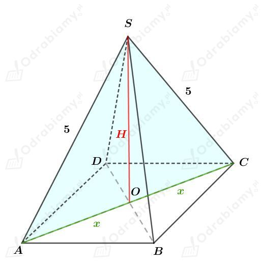
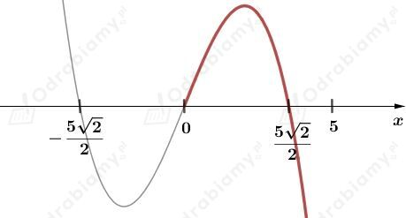

Dany jest graniastosłup prawidłowy, którego krawędź podstawy ma długość 2. Pole jego powierzchni całkowitej wynosi 24.
Niech H będzie długością wysokości tego graniastosłupa oraz niech Pś oznacza pole powierzchni jednej ściany bocznej.
a)
Podstawą tego graniastosłupa jest kwadrat.
Wyznaczmy pole powierzchni podstawy tego graniastosłupa. Mamy:
Wiedząc, że pole powierzchni całkowitej jest równe 24 mamy:
Jedna ściana boczna prostokąt o bokach długości 2 oraz H. Mamy zatem
b)
Podstawą tego graniastosłupa jest trójkąt równoboczny.
Wyznaczmy pole powierzchni podstawy tego graniastosłupa. Korzystając ze wzoru na pole trójkąta równobocznego mamy:
Wiedząc, że pole powierzchni całkowitej jest równe 24 mamy:
Jedna ściana boczna prostokąt o bokach długości 2 oraz H. Mamy zatem
c)
Podstawą tego graniastosłupa jest sześciokąt foremny.
Wyznaczmy pole powierzchni podstawy tego graniastosłupa. Korzystając ze wzoru na pole trójkąta równobocznego mamy:
Wiedząc, że pole powierzchni całkowitej jest równe 24 mamy:
Jedna ściana boczna prostokąt o bokach długości 2 oraz H. Mamy zatem
Dany jest sześcian o krawędzi długości a.
Przekątna tego sześcianu jest o 2 dłuższa od krawędzi, zatem przekątna ma długość a+2.
Korzystając ze wzoru na długość przekątnej sześcianu mamy:
Usuwając niewymierność z mianownika ułamka mamy:
Wyznaczmy pole powierzchni całkowitej tego sześcianu. Mamy:
Wyznaczmy objętość tego sześcianu. Mamy:
Korzystając ze wzoru skróconego mnożenia na sześcian sumy mamy:
a)
Rysunek:

Korzystając ze związku między długościami boków w trójkącie o kątach 30o, 60o, 90o mamy:
oraz
Wyznaczmy pole powierzchni całkowitej tego ostrosłupa. Korzystając ze wzoru na pole trójkąta równobocznego mamy:
Wyznaczmy objętość tego ostrosłupa. Mamy:
b)
Rysunek:

Odcinek x stanowi 1/3 długości wysokości trójkąta równobocznego będącego podstawą tego ostrosłupa. Korzystając ze wzoru na długość wysokości trójkąta równobocznego mamy:
Korzystając ze związku między długościami boków w trójkącie o kątach 30o, 60o, 90o mamy:
oraz
Wyznaczmy pole powierzchni całkowitej tego ostrosłupa. Korzystając ze wzoru na pole trójkąta równobocznego mamy:
Wyznaczmy objętość tego ostrosłupa. Mamy:
c)
Rysunek:

Zauważmy, że odcinek x jest wysokością trójkąta równobocznego o boku długości 6. Korzystając ze wzoru na długość wysokości trójkąta równobocznego mamy:
Korzystając ze związku między długościami boków w trójkącie o kątach 30o, 60o, 90o mamy:
oraz
Wyznaczmy pole powierzchni całkowitej tego ostrosłupa. Korzystając ze wzoru na pole trójkąta równobocznego mamy:
Wyznaczmy objętość tego ostrosłupa. Mamy:
Rysunek:

Korzystając z twierdzenia Pitagorasa dla trójkąta ABA1 mamy:
Zauważmy, że
oraz odcinek A1C1 jest przekątną kwadratu o boku długości 3 cm, czyli
Wyznaczmy cosinus kąta 𝛼. Korzystając z twierdzenia cosinusów dla trójkąta A1BC1 mamy:
Dany jest sześcian o krawędzi długości 1.
Korzystając z twierdzenia Pitagorasa dla trójkąta EDD1 mamy:
Więc również
Korzystając z twierdzenia Pitagorasa dla trójkąta CC1D mamy:
Odcinek CD1 jest najdłuższym odcinkiem trójkąta ECD1, zatem oznaczmy
Korzystając z twierdzenia cosinusów dla trójkąta ECD1 mamy:
Rysunek:

Obliczmy pole trójkąta ABD1. Pole to możemy zapisać jako
lub jako
Dzięki czemu otrzymujemy:
Korzystając z twierdzenia cosinusów dla trójkąta ACP mamy:
Dany jest sześcian o objętości równej 8, zatem krawędź tego sześcianu jest równa 2.
Rysunek:

Każda krawędź czworościanu foremnego jest przekątną kwadratów będącymi ścianami sześcianu. Zatem krawędź tego czworościanu ma długość 2√2.
Przypadek 1
Rysunek:

Wiemy, że pole powierzchni bocznej wynosi P, zatem pole jednej ściany bocznej jest równe 1/4P. Mamy zatem:
Korzystając z twierdzenia cosinusów dla trójkąta FES mamy:
Korzystając ze wzoru na cosinus podwojonego kąta mamy:
Mamy więc również:
Wyznaczmy cosinus kąta 𝛼. Mamy:
Wyznaczmy objętość tego ostrosłupa. Mamy:
Przypadek 2
Rysunek:

Wiemy, że pole powierzchni bocznej wynosi P, zatem pole jednej ściany bocznej jest równe 1/4P. Mamy zatem:
Korzystając z twierdzenia cosinusów dla trójkąta EFS mamy:
Korzystając ze wzoru na cosinus podwojonego kąta mamy:
Mamy więc również:
Korzystając z twierdzenia Protagorasa dla trójkąta SOF mamy:
Obie strony równości są dodatnie, więc
Wyznaczmy objętość tego ostrosłupa. Mamy:
Rysunek:

Korzystając z twierdzenia Pitagorasa dla trójkąta AOS mamy:
Założenie:
zatem
Wyznaczmy wzór funkcji opisujący pole trójkąta ACS. Mamy:
więc ostatecznie
Rozpatrzmy funkcję pomocniczą
Funkcja y=√t jest rosnąca, więc funkcje f i P największą wartość przyjmują dla tego samego argumentu.
Wyznaczmy pochodną funkcji f. Mamy:
Wyznaczmy miejsce zerowe pochodnej. Mamy:
Z wyznaczonych liczb tylko liczba 5√2/2 należy do badanego przedziału.
Naszkicujmy przybliżony wykres pochodnej f'. Mamy:

Funkcja pochodna f' zmienia znak z dodatniego na ujemny w punkcie x=5√2/2. Zatem
Zatem dla x=5√2/2 funkcja f przyjmuje wartość największą, więc funkcji P również dla x=5√2/2 przyjmuje wartość największą.
Otrzymaliśmy zatem
Odcinek 2x jest przekątną kwadratu ABCD, czyli
Wyznaczmy długość wysokości H tego ostrosłupa. Mamy:
Wyznaczmy objętość tego ostrosłupa. Mamy: